Envisioning Capital
Political Economy on Display
1
You are looking, on a microlevel, at the social relations of a new industrial epoch (fig. 1). The image is a “sociogram,” charting interactions among university professors and students as
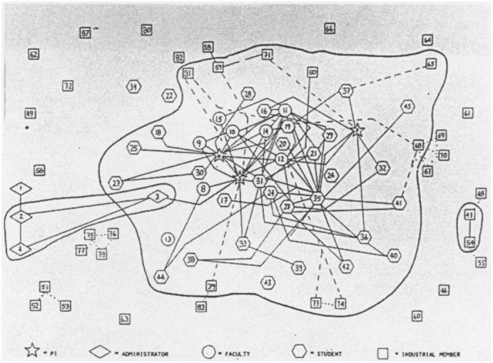
Sociogram of relationships for UICR center B. From J.D. Eveland, Communication Networks in University/Industry Cooperative Research Centers (1985).
they cross-pollinate with industrialists at a university industrial research center. The sperm-like penetration shows minimal administrative intervention into a budding embryo of research and development. It is upon such informal, nonhierarchical institutions that a brand new breed of capitalists pin their hopes. They have crossed the “second industrial divide,” a restructuring of capitalism characterized by decentralized production and changed technologies of flexible specialization, technologies that impose a competitive strategy of permanent innovation—hence the need to nurture new ideas and to keep their profit-making potential gestating within the proprietary domain of private firms. 1 These idea-producing clusters are enmeshed in global webs that, according to U.S. Secretary of Labor Robert Reich, catch approximately one-fifth of the U.S. population up into the global economy with prospects for a prosperous future, but threaten to leave much of the nation’s workforce out in the cold.2 To get a sense of how radical this restructuring is, compare its amorphous sociogram with the classic model of the corporate firm that dominated the economic landscape until two decades ago (fig. 2). This form dates back to the turn of the century (the “first industrial divide”) when continuous-process machinery initiated the mass production of standardized goods, leading to economies of scale that transformed the earlier system of family firms into “corporate” or “managerial” capitalism3-impersonally owned, giant corporations comprised of hundreds of operating units and thousands of workers, the internal operations of which were protected from competition. Each unit was managed by a hierarchy of salaried executives who, because surveillance and coordination are their primary tasks, have recently been vulnerable to replacement by computers, as disaggregating firms strive to trim their hierarchies and turn the managerial “fat” into profits.
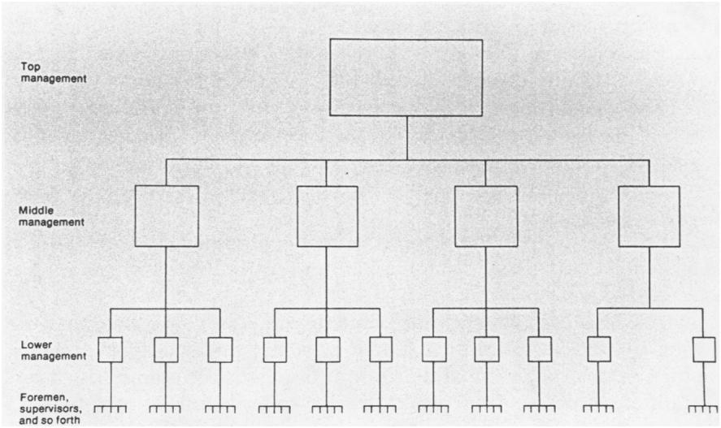
The basic hierarchical structure of modern business enterprise (each box represents an office). From Alfred Chandler, The Visible Hand: The Managerial Revolution on American Business (1977).
When giant corporations reigned supreme, their top executives, “corporate statesmen,” were close to political power. In 1953 Charles Erwin “Engine Charlie” Wilson, the president of the world’s largest manufacturing company, General Motors (its production equalled Italy’s total GNP), claimed no conflict of interest in becoming Eisenhower’s secretary of defense: “I cannot conceive of one because for years I thought what was good for our country was good for General Motors, and vice versa” (quoted in WN, p. 48). At the same time, everything hinged upon keeping these units distinct. This was the cold war era, when life on the planet literally hung in the balance over the issue of how government and economy were related.4 Of course, Lenin had adopted wholesale the
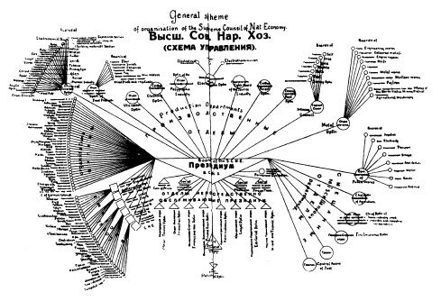
General scheme of organization of the Supreme Council of National Economy. From The Russian Economist (January 1921).
disciplining structures of corporate capitalism–hierarchical forms, Taylorist «scientific management,» assembly production–and the Soviets were early enthusiasts of Fordist principles. As for capitalism, as «convergence theorists» have pointed out, government regulation of industry, protection of labor and welfare programs all became established principles of Western states, reflecting significant aspects of the socialist tradition. But it was not similarity in form (fig. 3) but the flow of power–and goods–that counted. Because they owned the means of production, capitalists had no need to control the product. Whereas in capitalism power was a consequence of the distribution of goods, in Soviet socialism the distribution of goods was a consequence of power. Goods flowed out of the hierarchies of capitalist corporations to an anonymous market of consumers: they flowed into the hierarchy of the Communist Party from producers whose personal relation to the Party determined their power to consume. It is the depersonalization of exchange within capitalist society that depoliticizes economic power, no matter how close capitalists and politicians may become. The point of market exchange is the null point of social community. Marx noted in the Grundrisse that in traditional societies exchange occurred at the boundary between communities; seen in this light, he argued, capitalist society is «unsocial». 5 Georg Simmel later countered in The Philosophy of Money that the lived experience of this loss of traditional community was liberating because money exchange sets limits to mutual obligation, thereby limiting society’s claim on the individual.6 Under capitalism, no matter how bureaucratic the organization, such points of market indifference—and therefore of individual freedom are productive of the very fabric of society. Under Soviet socialism, in contrast, a person’s indebtedness was “infinite,” even (indeed, especially) for Party members; because symbolic social exchange-social obligation and sacrifice-was conceived to be without limits, it was transformed into “a monstrous technology of domination.”’ Who can doubt that during the cold war capitalism proved itself superior in delivering the goods? The years 1945-79 “witnessed the most dramatic and widely shared economic growth in the history of mankind” (WN, p. 64). Given the criterion of consumer plenty, Americans easily believed that the public interest was synonymous with the growth of national firms. U.S. corporations and their international subsidiaries dominated the “free” world. Yet because this new imperialism was not ostensibly political,8 the organizing world principle of nation-states allowed the soothingly comprehensible vision of polities as bound together by economic fate, all “in the same large boat, called the national economy” and competing with other national economies “in a worldwide regatta.” This vision, claims Reich, is now simply “wrong” (WN, pp. 4-5). Due to the vast centrifugal force of the global economy, a shared economic fate that sets the terms for a “National Bargain” among business, government, and labor interests, does not exist: “neither the profitability of a nation’s corporations nor the success of its investors necessarily improve[s] the standard of living of most of the nation’s citizens” (WN, p. 8). The American polity, argues Reich, has become unstuck from the American economy (ironically, just when the postsocialist societies have been urged to adopt the model): “as borders become ever more meaningless in economic terms, those citizens best positioned to thrive in the world market are tempted to slip the bonds of national allegiance, and by so doing disengage themselves from their less favored fellows” (WN, p. 3). When members of the same society become aware that they “no longer inhabit the same economy” (WN, p. 303), they are tempted to reconsider what they owe each other. This process raises the danger not only of a legitimation crisis of the welfare state (see early Habermas, Claus Offe, and Michael J. L. O’Connor) but also of a deeper crisis in the social polity because it challenges the very definition of the collective—the idea of the “American people”—itself.
2
While it may be premature to say that this situation marks the end of an era, it at least makes us aware of the historical specificity of a particular vision of society, one that, as a part of Western modernity, has long been unthinkingly presumed. In fact, this vision has always been clouded by the blurred line between political and economic definitions; the problem is not as new as Reich implies. At a time when the ambivalent legacy of ethnic nationalism is resurfacing-often precisely among those groups left behind in the new global economy-it is worth emphasizing that it was not the political notion of nationalism but the economic notion of a collective based on the depersonalized exchange of goods upon which, historically, the liberal-democratic tradition rests. This basis has always been potentially unstable. The proposition that the exchange of goods, rather than denoting the edge of community, is capable of functioning as the fundament of collective life necessitated the discovery that within the polity such a thing as an “economy” exists.9 This discovery can be traced to a particular historical site: Europe (specifically England and France) during the eighteenth-century Enlightenment. The economy, when it was discovered, was already capitalist, so the description of one entailed the description of the other.10 The discovery of the economy was also its invention. As Foucault told us (and neo-Kantians long before him), every new science creates its object.11 The great marvel is that once a scientific object is “discovered” (invented), it takes on agency. The economy is now seen to act in the world; it causes events, creates effects. Because the economy is not found as an empirical object among other worldly things, in order for it to be “seen” by the human perceptual apparatus it has to undergo a process, crucial for science, of representational mapping. This is doubling, but with a difference; the map shifts the point of view so that viewers can see the whole as if from the outside, in a way that allows them, from a specific position inside, to find their bearings. Navigational maps were prototypical; mapping the economy was an outgrowth of this technique.12 The French Physiocrat Francois Quesnay provided the first such map in 1758 (fig. 4) 13. His “economic picture” of society (“Tableau Economique”) traced the interdependence of three interacting sectors of the economy—farmers, landowners, and artisans—as they exchanged goods and labor across time. What was unique here was the organic representation of these sectors as an interlocking, self-reproducing whole. Quesnay wrote to his friend Mirabeau, “the zigzag, if properly understood, cuts out a whole number of details, and brings before your eyes certain closely interwoven ideas which the intellect alone would have a great deal of difficulty in grasping, unravelling and reconciling by the method of discourse.”4 The economic table had six variants, each showing the effects on circulation through the whole of a particular policy or social practice (for example, variant iii: spending on “excesses and luxury”; iv: “rapid effects” of taxes on advance; v: decay of husbandry; vi: “the destructive effects of the impost” when “overloaded by charges of administration”).
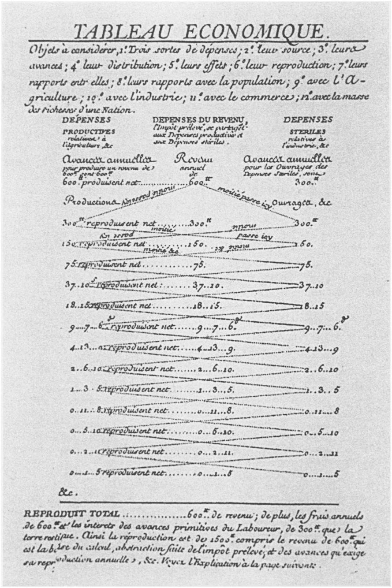
“Tableau Economique.” From Francois Quesnay, The Economical Table (1766; 1968).
It is significant that like many early political economists, Quesnay was trained as a physician.15 The circulation of wealth was to him the lifeblood of society. There was a medieval precedent for this metaphor. Even before William Harvey’s seventeenth-century physiological theo- ries, the description was common of money “circulating” through the “body politic.” Thomas Hobbes spoke of money as blood; in Thomas Mun’s case money was the “fat” that had to be regulated so that this body became neither too thick nor too lean. But if the idea of a political economy was, indeed, a direct descendant of this feudal conception, this only makes the originality of Physiocratic theory stand out more clearly. The difference in Quesnay’s scheme was that it accounted for the generation of wealth as well as its circulation. Landowners advanced capital to both other sectors, but in this agrarian capitalist model only the farmers returned it (to the landowners) with a surplus. In contrast, the annual advance by landowners to artisans was returned without addition. Their expenses were unproductive-in Quesnay’s term (and the metaphor is important), “sterile». 16 Quesnay drew on Sir William Petty’s description of land as the mother of wealth and the labor that cultivated it, the father. An admirer of the agrarian capitalism of England, where scientific husbandry had achieved visible results in an increase of general prosperity,17 he concurred with Petty’s followers that if matter was fertile, the prudent labor of the cultivator brought it form. Together, matter and labor contributed with every new year a visible surplus or net product (produit net) in excess of what had existed before. Hence, the postulation of what I will call Quesnay’s “fertility schema” is precisely what made the break from earlier theorists of wealth possible.18 Since the beginning of double entry bookkeeping (in northern Italy during the quattrocento), commercial mathematics had assumed that exchange was a zero-sum game.19 Because trade and barter involved the exchange of equivalents, mere circulation within a system could never augment the size of the pie. Mercantilist theory concluded that if one party grew richer from trade, it was at another’s loss. Hence, according to Jean-Baptiste Colbert, mercantilism’s influential seventeenth-century proponent, commerce was a “perpetual and peaceable war of wit and energy among all nations” (quoted in RC, p. 73). The goal of this “peaceable war” was to gain wealth for real wars, and the wealth that counted was money. According to Colbert, “everyone agrees that the might and greatness of a State is measured entirely by the quantity of silver it possesses” (quoted in WN, p. 14). Quesnay’s “Little Book of Household Ac- counts,” as he called it, was an attempt to convince the French king that mercantilist reasoning was incorrect. In his essay “Grains” for the Encyclopidie, Quesnay argued against the theory of money as government wealth: “a kingdom can be prosperous and powerful only through the medium of products which are continuously renewing themselves or being generated from the wealth of a numerous and energetic people” (quoted in RC, p. 106). In “Hommes” he wrote that in the economic life of an “agricultural kingdom” continuous exchange among the classes results in an increase of the wealth of the whole, and hence “the more wealth men produce over and above their consumption, the more profitable they are to the state” (quoted in RC, p. 107). A century later, Marx would credit Quesnay with seeing that the “birthplace of surplus value is the sphere of production, not that of circulation” (quoted in RC, p. 141).20 At the same time, the “picture” Quesnay provided was one in which these two schemes, circulation (circular flow) and production (the fertility schema), folded into each other in the same social body. Of course, even the mercantilists had a “fertility schema.” Colbert wrote to the French king:
“In view of the fact of having just one constant quantity of silver circulating in all Europe, augmented from time to time by that which comes from the West Indies, it is certain and demonstrable that if there are only 150 million pounds of silver in public circulation, one can only succeed in augmenting it by 20, 30 and 50 millions at the same time as one removes the same quantity from neighbouring States.21
Colbert was making a crucial distinction: trade within the European system could redistribute wealth by “augmenting” one nation’s coffers at another’s expense (with no net gain), but for its augmentation in an absolute sense colonies were necessary. Jean-Francois Lyotard, in a recent and otherwise disappointing study, makes the point that mercantilism imagined a “trading body” (the body of Europe) and a “victim body” (of barbaric foreigners). Colonialism entailed a trade of nonequivalents; it was looting a colony for precious metals, with trinkets given in return. Colonies were the necessary “exterior” of the system, “whose only role is to be emptied [cannibalistically], into an ‘interior’,… the … body of Europe.”22 What I am describing as “fertility” was here the consequence of rape. Among the Physiocrats, Quesnay’s “economic picture” assumed a metaphysical, “near-mystical” importance (RC, p. 110). Influenced by Cartesianism, Quesnay frequently described the universe as a “gigantic machine,” operating “according to natural laws of divine origin” (RC, p. 122).23 Mirabeau described the “perpetual movement of this great machine” of nature, “animated and directed by its own springs” as in “no need of outside direction” (quoted in RC, p. 122). It was just a step to argue that the economic system had no need of government control. Quesnay did not take that step (as Adam Smith would do several decades later). His concern was advising the king, who, as “co-proprietor”24 of the land of the entire kingdom, could lay claim through taxes to its wealth: “agriculture is the inheritance of the sovereign: all its products are visible; one can properly subject them to taxation” (quoted in RC, p. 102). Such visibility, conducive to a compulsory patriotism, was lacking in mercantile, monetary fortunes: “a clandestine form of wealth which knows neither king nor country” (quoted in RC, p. 117). The Physiocrats’ political call was for “legal despotism.”25 Quesnay wrote, “there should be a single sovereign authority, standing above all the individuals in society and all the unjust undertakings of private interests” (quoted in RC, p. 117). Only the king (with the aid of his Enlightenment advisors) was in a position to see the whole and govern according to the natural laws that guaranteed its rational functioning. Joseph Schumpeter writes in his monumental History of Economic Analysis, “Quesnay harbored no hostility either to the Catholic Church or to the monarchy. Here, then, was la raison, with all its uncritical belief in progress, but without its irreligious and political fangs. Need I say that this delighted court and society?”26
3
Reading Smith’s The Wealth of Nations (1776), one is struck from the first that the audience he addresses is no longer limited, as with Quesnay, to the king and his authority.27 We have crossed, within two decades, an intellectual and political divide.28 The “whole body of the people” that Smith is constantly considering forms the potential audience for his book. This social body that sees itself described is a new one.29 It is no longer the traditional body politic of feudal theory that even Rousseau could still describe as “organized, living and similar to that of a man,” a moral being, possessing a “general will, which always tends toward the conservation and well-being of the whole and of each part,” with the sovereign as head, the laws and customs as brains, and where “commerce, industry and agriculture are the mouth and stomach which prepare the common subsistence; the public finances are the blood that is discharged by a wise economy, performing the functions of the heart, in order to distribute nourishment and life throughout the body.”30 With Smith the social vision clearly shifts. Not only is the body politic secularized.31 It loses its ontological status and becomes pragmatic; it must be produced by doing. Now, even this has a precedent. Machiavelli described the Prince as founder of the polis, capable of conceiving the body politic from out of himself. In the homely image of Francesco Guicciardini (his younger compatriot), the Legislator is like a pasta maker. If he “does not succeed with his mixture the first time, he makes a new heap of all his materials and stirs them together again” in order to get the product right.32 But Smith’s “makers” are the laboring masses, although he did not use this term. They make society by making things. The economy is the place of creative action.33 And politics recedes from center stage. For Smith, the machine is no mere metaphor for the universe as it was for Quesnay (as well as for Rousseau). Machines are, literally, the means whereby labor, divided and specialized, becomes productive.34 And although such division occurs to some extent in agriculture, only industry feels its full effect.35 Smith’s example is a pin factory-not a “great manufacture” but a “trifling” one-small enough so we can “see” the principle of the division of labor that governs the whole (WON, 1:1:4). This question of seeing is problematic. Smith will provide us with no perspective-that of God or king or Reason-from which the whole productive social body can be viewed. Nor will we ever see an object (such as land) that causes wealth to grow. We see only the material evidence of the fertile process of the division of labor: the astounding multiplication of objects produced for sale. Commodities pile up; in a pin factory “two or three distinct operations” are performed by ten men. Those ten persons, therefore, “when they exerted themselves…. could make among them upwards of forty-eight thousand pins in a day.” Each person who, working alone, “could not … have made twenty, perhaps not one pin in a day,” now makes one-tenth of forty-eight thousand pins, or forty-eight hundred per day (WON, 1:1:4, 5). Smith’s fertility schema is the multiplying effect of a procedure, not something, nor even somebody. The machines (at that time rudimentary) are not themselves the source of value, but only the means of saving labor time and increasing worker dexterity.36 Nor is the source the “capital stock” that puts labor “into motion” (WON, p. lxi).37 And although labor is the source of value, it is not the source of fertility for growth. Workers are not promethean figures. The value they produce increases not as a result of their own strength but as “effects of the division of labour” (WON, 1:1:3). This division causes the productivity of labor, machines, capital-not vice versa. As Schumpeter writes, “nobody, either before or after A. Smith, ever thought of putting such a burden upon division of labor. With A. Smith it is practically the only factor in economic progress” (EA, p. 187).38 The schema of industrial production-multiplication through division-is parthenogenic. Smith is obsessed with this character in systems to subdivide from within with beneficial effects. It is fundamental to his theory of language. In his essay “Language,” appended to the 1761 edition of The Theory of Moral Sentiments, he is fascinated by the fact that “mankind have learned by degrees to split and divide almost every event into a great number of metaphysical parts, expressed by the different parts of speech, variously combined in the different members of every phrase and sentence” (quoted in RC, p. 179).39 Similarly, the advantage of money as a system is that it can, without any loss, be divided into any number of parts (see RC, p. 179). Philosophers, like machine inventors, make their trade in “combining together the powers of the most distant and dissimilar objects” (WON, 1:1:11). At the same time their profession, too, benefits from an intellectual division of labor; the “subdivision of employment in philosophy, as well as in every other business, improves dexterity, and saves time. Each individual becomes more expert in his own peculiar branch, more work is done upon the whole, and the quantity of science is considerably increased by it” (WON, 1:1:11). This astonishingly fertile division of labor has significant moral consequences, however, and they are negative. The same division that causes the social organism to grow in wealth also causes the individual worker to become impoverished. Smith’s book does not dwell on this, but as he describes how “the whole of every man’s attention comes naturally to be directed towards some one very simple object” (WON, 1:1:9),40 the distressingly stultifying nature of divided labor becomes visible:
The man whose whole life is spent in performing a few simple operations…. generally becomes as stupid and ignorant as it is possible for a human creature to become. The torpor of his mind renders him, not only incapable of relishing or bearing a part in any rational conversation, but [also] of conceiving any generous, noble, or tender sentiment, and consequently of forming any just judgement concerning many even of the ordinary duties of private life. … But in every improved and civilized society this is the state into which the labouring poor, that is, the great body of people, must necessarily fall, unless government takes some pains to prevent it. [WON, 5:1:840]41
Here is the paradox in Smith’s view of homo faber: each real body is stunted in order for the social body to prosper. The latter becomes a production machine, and its individual, laboring members are reduced to what Stalin would later call, affirmatively, “little screws” within it. Now, Smith’s philosophical heritage will not allow him to be satisfied with such a collectivist resolution. In order for the wealth of nations to be affirmed as the goal of social life, it must be a means to the end of the happiness of the individuals of which nations are composed. And so there is a sudden shift in focus. The impoverished producer shows up on the stage again, this time as the well-clad consumer. Smith lists the tangible benefits he or she receives on the domestic scene: “the woollen coat, for example, which covers the day-labourer, as coarse and rough as it may appear, is the produce of the joint labour of a great multitude of workmen” (WON, 1:1:12). The same is true of “all the different parts of his dress and household furniture”: shoes, bed, kitchen grate, coal, kitchen utensils, knives and forks, plates, bread, beer, and “that beautiful and happy invention,” glass windows (WON, 1:1:13). With the wave of a hand, the victim of the division of labor becomes its beneficiary. Such shifts in focus are frequent in Smith’s argument; in fact, the entire legitimation of the system depends on them. And yet these shifts involve a conjuring game. Gifted as Smith the philosopher is at splitting and dividing events into metaphysical parts and then reassembling them, combining the powers “of the most distant and dissimilar objects,” he slides over an abyss (indeed several) in logic. (They will reemerge time and again in economic theory.) But it is as if he knows that he is proceeding through a philosophical sleight of hand. From the start, he gives the game away. The “annual labor of every nation,” Smith tells us at the very beginning of his treatise, is a composite “fund.” Thus “thriving nations” can exist even if “a great number of people do not labour at all” (WON, pp. lix, lx). The inequality of this situation might be justified if it reflected the natural order of things. But Smith candidly denies precisely this ontological premise. Natural talents are not very different at birth. Between a “philosopher and common street porter” there is less difference than assumed:
When they came into the world, and for the first six or eight years of their existence, they were, perhaps, very much alike…. About that age, or soon after, they came to be employed in very different occupations. The difference of talents comes then to be taken notice of, and widens by degrees, till at last the vanity of the philosopher is willing to acknowledge scarce any resemblance. [WON, 1:2:17]
It could not be clearer. The division of labor, upon which the wealth of nations depends, creates (against nature) a society of unequals. Class difference is the by-product of national wealth-and it is class difference that determines one’s power in the marketplace, including the power to bargain effectively for the price of one’s own labor. But by moving to the composite level Smith sustains the salutary picture; within the human species as a whole, differences in talents lead to “better accommodation and conveniency” (WON, 1:2:18)42-which again begs the question of distribution because the best “accommodation and conveniency” go to those who do not contribute to the labor “fund” at all. What we are calling Smith’s sleight of hand he himself called the “invisible hand.” (There seems little doubt that Smith’s use of this term derived from the tradition of natural theology, which saw effects of the hand of God everywhere in the natural world.)43 And although this bedrock metaphor of capitalist economics appears much more rarely in Smith’s work than the tradition of his reception would have us believe, the conception behind this term operates frequently, in fact just at the points where he slides over the logical gaps. So this hand is tricky, and it is easy to understand why many have dismissed it as a ruse, a legitimating gloss over (bourgeois) class interests. But being merely this would not explain its tenacity within the discourse of political economy. This unseen hand opens up a blind spot in the social field, yet holds the whole together. What is the social body to which it belongs? First and foremost, it is a body composed of things, a web of commodities circulating in an exchange that connects people who do not see or know each other. These things make it a “civilized” body (fig. 5). Having an abundance of “objects of comfort” is the litmus test that distinguishes “civilized and thriving nations” from “savage” ones, “so miserably poor” they are reduced to “mere want” (WON, p. lx). It is trade that has caused certain parts of the world to progress, leaving others (inland Africa, North Asia) in a “barbarous and uncivilized state” (WON, 1:3:23). Commodities are the key to Smith’s defense of the new social body; despite distinctions between rich and poor, all members of “civilization” can console themselves, because the quantity of things they possess marks them as superior to much of the world’s population: “the accommodation of an European prince does not always so much exceed that of an industrious and frugal peasant, as the accommodation of the latter exceeds that of many an African king, the absolute master of the lives and liberties of ten thousand naked savages” (WON, 1:1:13). The things-in-circulation that comprise the social body, like all matter-like planets in their orbits-obey nature’s laws. What appears to individuals as their own voluntary activity is used, cunningly, by nature to harmonize the whole, so that each person is “led by an invisible hand to promote an end which was no part of his intention” (WON, 4:2:485). Foucault, in his late lectures, addressed The Wealth of Nations directly, speaking positively of the “benign opacity” of the economic system, the functioning of which is beyond the knowledge (and therefore the power) of the state.44 There is a dark side, however, underneath the naturally harmonious whole, something monstrous in the system that, sublimely out of control, threatens to escape every kind of constraining boundary.
Photos from the French scientific expedition, Tierra del Fuego, 1882: “Men and women wore tiny aprons” and “Civilization advances.”
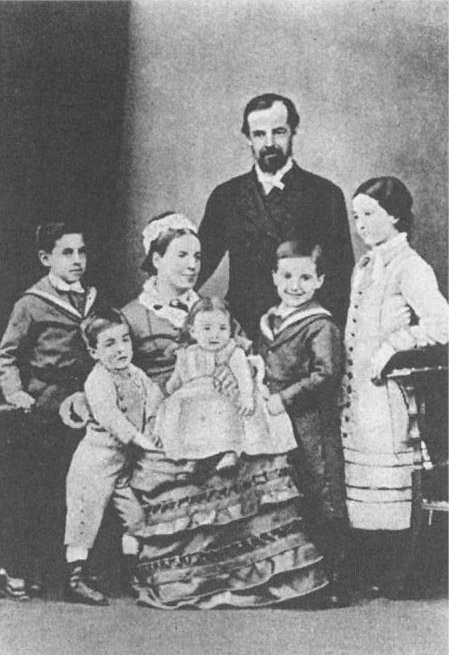
Photo of Bridge’s family, London, 1880: “From left to right, Despard, Will, Mother, Bertha, Father, the Author, Mary.” From Esteban Lucas Bridges, Uttermost Part of the Earth (1948).
Expanding by parthenogenic division, invisible except in its commodity effects, insensate to human passions, impervious to human will, the thing-body of “civilized” society grows, theoretically, without limits.45 It is vastly grander than the moral society that it encompasses and overruns. The social body of civilization is impersonal, indifferent to that fellow-feeling that within a face-to-face society causes its members to act with moral concern. The “pleasure of mutual sympathy,” when I find my companion entering into my situation as I into his, causes me to moderate my passions so as not to exceed what is acceptable in the eyes of another who, as an “impartial” spectator, observes me from a sympathetic distance and provides the constraining mirror through which I observe and monitor myself (TM, pp. 14, 39). But the thing-society of civilization is blind to such constraints. Looking up from my work at this landscape of things, I cannot see the whole of its terrain. It extends beyond my ability to feel. And this blindness leaves me free to drop my sight to the short horizon of my own self-interest. Indeed, blindness is the state of proper action. Within that horizon, however, desire is free and knows no bounds. This desire expresses itself as a pursuit for things. The pleasure of mutual sympathy, when I find my companion entering into my situation as I into his, is replaced by the pleasure of empathy with the commodity, when I find myself adapting my behavior to its own-which is to say, I mimic its expansiveness. My desire multiplies to match the ceaseless multiplication of things, shooting so far past my needs that it appears as if my goal were anything but their satisfaction. The objects that I pursue with the fervor of a lover have little to do with needs for mere survival. I come to desire the pleasure of desire itself. In fact it could not be otherwise. If desire were satiated, if it were not deflected onto a demand for commodities, the fashionable replacement of which knows no limits, then not only would the growth of wealth come to a halt but the whole social nexus of civilization would fall apart.46 This state of things is only weakly described by the utilitarian doctrine that individuals will strike a calculated balance between gaining the greatest satisfaction and expending the least amount of labor pain. Smith’s schema is more radical and more extravagant. According to him, the invisible hand of the natural order counts precisely on the destabilizing surplus of a desire blind to the whole and ignorant of its effects. Again, it is at the collective level that this principle comes into play; the deceptive promise that happiness will be gained through the possession of objects is the decoy whereby nature ensnares the imagination and transforms it into a collective good. Smith is specific on this point:
The pleasures of wealth and greatness … strike the imagination as something grand and beautiful and noble, of which the attainment is well worth all the toil and anxiety which we are so apt to bestow upon it. And it is well that nature imposes upon us in this manner. It is this deception which rouses and keeps in continual motion the industry of mankind. [TM, p. 348]
On the one hand, desire motivates the laborer to work, the promise of consumption growing proportionately to the difficulty of the labor. On the other hand and with equal importance, this desire creates what Simon Kuznets, writing in the twentieth century, called a “trickle-down effect” in the flow of goods. Smith describes the lack of subjective utility in the motivation of the landlord who lives off the labor of others:
It is to no purpose, that the proud and unfeeling landlord views his extensive fields, and without a thought for the wants of his brethren, in imagination consumes himself the whole harvest that grows upon them…. The capacity of his stomach bears no proportion to the immensity of his desires…. The rest he is obliged to distribute among those, who prepare, in the nicest manner, that little which he himself makes use of…. The rich …, tho’ they mean only their own conveniency, tho’ the sole end which they propose from the labours of all the thousands whom they employ, be the gratification of their own vain and insatiable desires, … are led by an invisible hand to make nearly the same distribution of the necessaries of life, which would have been made, had the earth been divided into equal portions among all its inhabitants, and thus without intending it, without knowing it, advance the interest of the society, and afford means to the multiplication of the species. [TM, pp. 349-50]
Not demand, instrumentally and rationally calculated, but desire, deceived by commodities as decoys, is the motor force of Smith’s “economy.” We are caught in its orbit as self-interested monads who precisely in our unreason bring about reason’s goal. Due to the deceptive nature of desire, it is impossible for the consumer to make a truly rational choice. This moment of irrationality has gotten lost in the tradition through which Smith’s theory has been passed down. It makes the dynamics of the system enormously unstable. Consider the paradox that the efficiency of the division of labor, which alone causes wealth to grow, at the same time causes value to diminish because the value of something, its “real price,” is the toil and trouble of acquiring it (WON, 1:4:32, 1:5:33). Or consider the fact that the cosmopolitan promiscuity of comes into conflict with the political limits of the nation, the called upon to secure.47 Self-discipline is required of the producer; insatiable desire is required of the consumer. But since they are the same person, the construction of the economic subject is nothing short of schizophrenic.
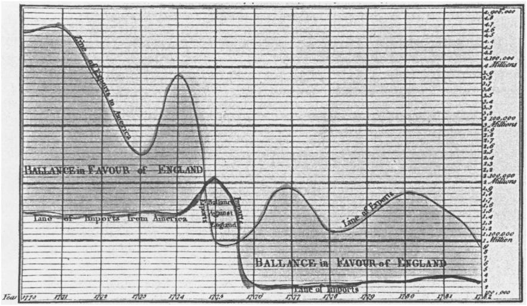
“Chart of Imports and Exports of England to and from All North America, from the Year 1770 to 1782.” From William Playfair, The Commercial and Political Atlas (1786; 1983).
Colin Gordon, characterizing Foucault’s position, the invisibility of the economic system “means that the economic sovereignty is an impossibility; the knowledge intended to be compiled in [Quesnay’s] Table is, even in principle impossible for a sovereign reliably to obtain.”48 And yet Smith’s economic theory would have had no conviction if one could not see the effects of the processes it described. Contemporaneous with Smith’s work was a crucial innovation in the field of visual representation that made it possible to chart the effects of the invisible hand. Figure 6 is an example of the work of William Playfair, whose Commercial and Political Atlas appeared in 1786. Note that rather than attempting to provide a God’s-eye view of the whole, this form of data graphics correlates two measurements, here, quantity (of British imports from and exports to effects of the American Revolution and the end of the protectionist Navigation Acts). Money is the measurement of economic activity, the universal representation of all commodities. The wealth of nations leaves a trace in money transactions that is charted. Brand new is the fact that, unlike earlier maps, the graphical design is «no longer dependent on direct analogy to the physical world. … This meant, quite simply but quite profoundly, that any variable quantity could be placed in relationship to any other variable quantity, measured for the same units of observation.»49
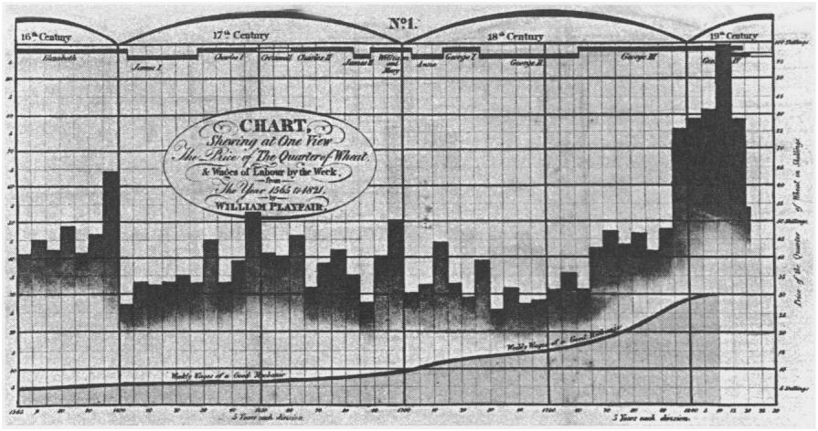
“Chart [by William Playfair] Shewing at One View the Price of the Quarter of Wheat, and Wages of Labour by the Week, from 1565 to 1821.” From Edward R. Tufte, The Visual Display of Quantitative Information (1983).
“Relational graphic[s]” link “at least two variables, encouraging and even imploring the viewer to assess the possible causal relations between the plotted variables.”50 In arguing to causes on the bases of effects, in showing correlations leading to decline or growth over time, data graphics show patterns of market behavior that emerge unintentionally from the aggregate of individual decisions, the seeming chaos of private persons and their self-interested desires. A later graphic by Playfair (fig. 7) gives empirical evidence to support the Malthusian claim that the means of subsistence, because limited, impose a limit on the increase of population (the inference is that an increase in the cost of bread counters the tendency of workers to bear more children in response to rising wages). Playfair’s work lays the ground for the method of producing knowledge within the new discipline of political economy-not a picture of the social body as a whole, but statistical correlations that show patterns as a sign of nature’s plan.
4
It is difficult for us to appreciate what an extraordinary revision of the social body the discovery of the “economy” entailed. The conception of the progress of civilization as the unlimited increase of objects produced for sale was a defining moment of modernity. Not just one of a series of social sciences, “classical” economics was philosophy in the grander sense. It sought to place an anthropology, a political theory, a theory of social practice all within the orbit of economic life, appropriating them from the realm of political power and police control. As the state loses ground, the political body splits off from the economic one. Thus we have two visions of the social collective. While the tensions between them make their relationship unstable, their separate existence allows for the critical exposure of the illusionary elements of both visions. The ambivalent position of the individual - both an end in her or himself and the means toward harmony of the social whole - was itself not new (one might mention the tradition of monopsychism connected with Neo-platonism in the premodern era). But the crucial role of fabricated things in social life, the significance of material objects or their money equivalents as the mediation of all social relations, deeply changed the conception of social existence.51 The distinction between civilized and savage life was linked permanently to the abundance of commodities that became ciphers as they circulated promiscuously among invisible strangers. At the same time they were invested with social meanings and personal desires far in excess of their utilitarian value. Smith called upon traditional notions of civic virtue to compensate for the moral inadequacies of the laws of political economy. This is a weakness in his thought because the civic society he desires is founded on principles inimicable to the economic society he describes. It was Hegel who drew out far more consequently the philosophical implications of political economy. In Hegel’s writings, the antagonism first proposed by Smith becomes fruitful, indeed decisive. As a topological conception, “political economy” is centrally inscribed within the Hegelian metaphysical landscape, marking a break with earlier thinking that one commentator describes as nothing less than “epoch-making.”52 The more our archival knowledge of Hegel grows, the more indisputable this fact becomes.53 The crucial point is that the central Hegelian concept of civil society (bürgerliche Gesellschaft) is precisely the society created by what Smith called political economy. Here Hegel breaks from the traditional ancient and Enlightenment meanings of civil society (Smith’s included) that were placed topologically on the plane of the political-the only meanings that Charles Taylor, for example, recognizes. (Taylor is a theorist in the Hegelian tradition who, despite his excellent early work on Hegel, totally ignores in his own work the topological displacement we are speaking about and attempts to write political philosophy without any concern for economic theory.)54 Not just Taylor’s work but much of the contemporary discussion of the public sphere fails to do justice to Hegel’s original insight that civil society, as “modern society,” is produced by a historically specific form of economic interdependence, one that follows all of the principles of logic that Smith described.55 We have known only relatively recently that the young Hegel was profoundly influenced by The Wealth of Nations.56 In a text from 1803-4, first published in 1932, Hegel referred specifically to Smith’s pin factory, noting the tremendous productivity achieved by the division of labor.57 Not only does Hegel fully acknowledge the emasculating effects (Abstumpfung) caused by the division of labor,58 but he is also aware of the social inequality that the wealth of nations necessarily creates: “the antithesis emerges between great wealth and great poverty … -to him who has, more is given” (NPG, p. 223). Factories and mines are based precisely on the misery (Elend) of a class, condemning “a multitude to rude existence” (NPG, p. 229). Strikingly, Hegel recognizes the sublime infinity of this “system of needs,” the “insatiable” desire of consumers (see NPG, pp. 222, 223),59 the “inexhaustible and illimitable” production of “what the English call ‘comfort,”’ and the deterritorializing “boundlessness” of the world market.60 Civil society is a tremendous power, an abstract “territory of mediation where there is free play for every idiosyncracy … and where waves of every passion gush forth.”’61 Although governed by natural laws, it creates a human interdependency that is “blind” and thus “accidental” (zufällig)-a strongly negative term in Hegelian discourse. In the early texts it is clear that this infinity of human needs, the limitless growth of both goods and human desires, frightened Hegel. He writes in the 1803-4 text, “needs and labor … [create] a monstrous system of mutual dependency, an internally agitated life of the dead, which, in its motion, moves about blindly and elementarily, and like a wild animal, needs a steady and harsh taming and control.”62 The state, through law and the police, is the necessary oppositional power against the wildness of this system. It brings order, sets boundaries, tames the animal. Precisely in retreat from the monstrous nature of “civil” society, Hegel introduces the state as a deus ex machina (see BTR, p. 125), for only through the rationality and centrality of the state is collective life accessible to individual consciousness and the central, blind spot of civil society overcome. In a real sense, it could be said that Hegel takes the vision of the social body of classical economic theory and, tilting it onto the perpendicular axis of time, re-inscribes it onto the political realm, where, lifted out of the insipid, “accidental” events of the marketplace and relocated on the dramatic and bloody fields of battle, it is read as the history of freedom. In the same early period as his exposure to The Wealth of Nations, Hegel read Schrökh’s Weltgeschichte (1785), which in effect conceives of world history as a pin factory because “no one has totally performed any action. Because the whole of an action, of which only a fragment belongs to each actor, is split up into so many parts,” the rationality of history is only accessible through reflection: “the work [of history] is not done as a deed but as a result which is thought.”63 It is through the passions and desires of great men, political actors rather than economic ones, that reason “cunningly” works its way out into history, achieving, for collective action, a rationality denied to that of individuals. In Hegel’s 1819-20 lectures on the Philosophy of Right this analogy to civil society is explicit: “the secret of world history is … the reversal of particular goals [so that they become the general goal of the realization of Reason]. This reversal [Umkehrung] is the same as we have also seen in civil society [bürgerliche Gesellschaft]. Insofar as the individual carries out his particular goals he makes them objective.”64 Hegel even appropriates the root metaphor of political economy in order to describe the process of history. He writes in 1816 that despite Napoleon’s defeat at Waterloo,
the world has given the age marching orders…. This essential [power] proceeds irresistibly … with imperceptible movement, much as the sun through thick and thin. Innumerable light troops flank it on all sides, throwing themselves into the balance for or against its progress, though most of them are entirely ignorant of what is at stake and merely take head blows as from an invisible hand.65
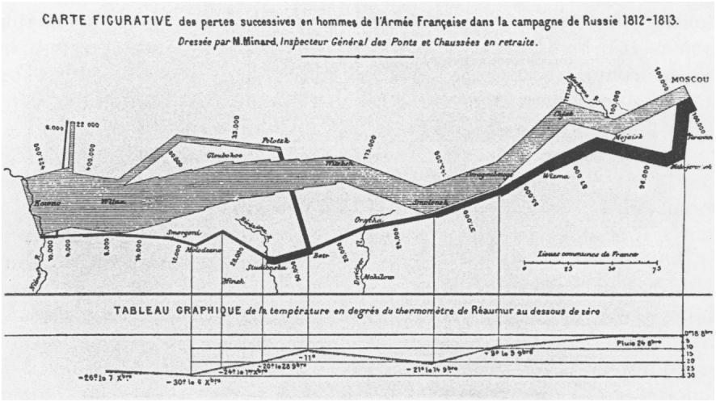
“Figurative map of successive losses in men in the French Army in Russia, 1812-1813.” From Tufte, The Visual Display of Quantitative Information. Charles Joseph Minard combines a data map and time series of Napoleon’s invasion into Russia. Beginning at the left, the thick band shows the size of the French army, forty-two thousand men, when it invaded in June 1812. The diminishing width of the band denotes casualties. The dark band is the retreat, and it is linked to temperature scales, the bitter cold Russian winter, through which the army struggled back into Poland.
Of course Hegel’s is just as much a trick as Smith’s original one, as Charles Joseph Minard’s visual display (1861) of the French invasion of Russia graphically portrays (fig. 8).66 Hegel’s “cunning of reason” plays, on the politico-historical level, precisely the role that Smith’s “invisible hand” plays on the socioeconomic level, including the ideological role of justifying the harm done to individuals in terms of “progress” for the social collective. What needs to be emphasized, however, is that both Smith and Hegel understood political economy as belonging to a more general philosophical discourse, one that entailed critical reflection-a normative dimension-as a necessary part.
5
The attempt to purge the “science” of economics from such concerns about normative values marks the deepest epistemological break between the classical economists of the late eighteenth century and the neoclassical economists at the nineteenth century’s close. If we were following here the canon of the history of economic theory we would trace precisely this development, describing it as the “professionalization” of the discipline. Economic theory is now concerned with the far narrower task of describing “laws” that account for regularities of market behavior as a self-interested rationality of means, while it remains totally indifferent to the normative questions about the reasonableness of individual motives or the substantive rationality of social ends. In the language of Alfred Marshall and his school, the anthropological premise of political economy is reduced to the formal “law” that “every man desires to maximize the difference between the sum total of his satisfactions and the sum total of his sacrifices, both discounted to the present moment” (EA, p. 576).67 And although in demand theory all value hinges on these subjective desires, their origin is shrouded in mystery. As the anthropologists Mary Douglas and Baron Isherwood have noted, “it is extraordinary to discover that no one [among the economists] knows why people want goods.” Economists shun this question, “cleans[ing]” their discipline from “psychology” and taking “‘tastes”’ as given.68 Of course, the neoclassical economists of the 1870s marginal revolution69 drew (extremely varied) social and political consequences from their theories.70 Yet crucial to their claim to be doing “science” was the deliberate reduction of their vision of the political economy to a point of normative indifference. Not qualitative judgement, but quantitative measurement was the criterion of scientific knowledge.71
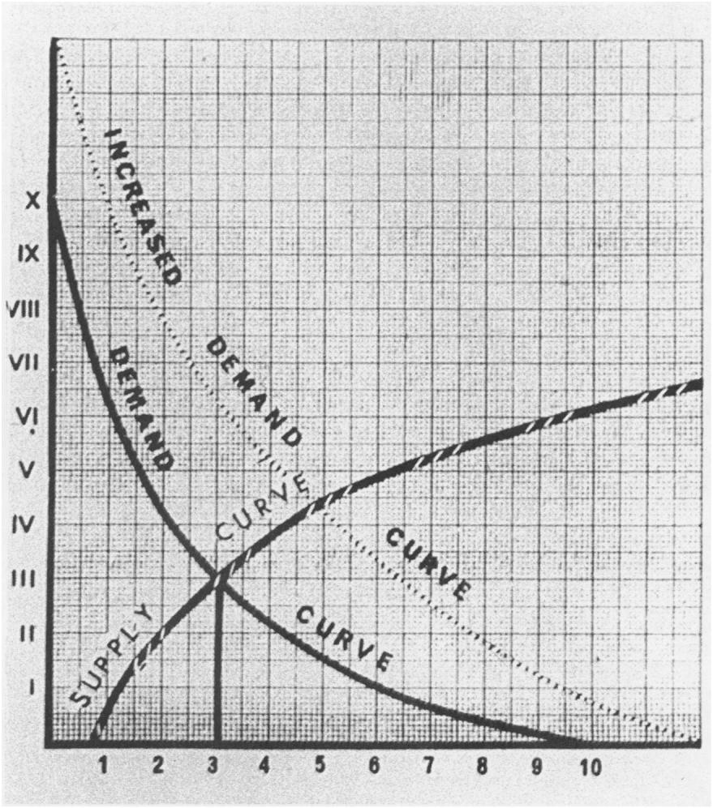
Supply-Demand Curve. From Isaak Ilich Rubin, Essays on Marx’s Theory of Value (1972).
The image prototypical of this vision is the supply-demand curve (fig. 9) described by Schumpeter as “demand schedules or curves of willingness to buy (under certain general conditions) specified quantities of a commodity at specified prices, and of supply schedules or curves of willingness to sell (under certain general conditions) specified quantities of a commodity at specified prices” (EA, p. 602). The “law” into which this translates is that there is a diminishing marginal productivity and a diminishing marginal demand, so that exchange takes place when the relative marginal significance of the commodity received exceeds that of the commodity given up for each party in the exchange. “This marginal significance is not a constant magnitude but changes with different persons and under different circumstances”-none of which are the concern of the economist: “all we know is the relative significance of an increment of one commodity to a decrement of another” (ET p. 309).72 The whole problem of class polarization disappears in marginal utility theory because the “earnings” of labor and of capital are both determined numerically by the last profitable application of each (labor and capital) at the margin.73 And so does the problem of a fertility schema. The margin model presumes growth74 and then focuses on individual economic behavior, wherein the same mechanism of scarcity and demand sets the price of labor’s wages, inter-firm purchases, and consumer buying. Consumer choice determines value, defined by the Austrian Carl Menger (1871) as “a judgement … about the importance of goods at their disposal.”75 The model is one of equilibrium in an essentially static frame. Not only is growth “given” as an exogenous variable but scarcity of resources, consumer motivation, population growth, and income distribution (class difference) are presumed as well. The economic problem is the pricing and resource allocation of fixed supplies. Neoclassical economics is microeconomics. Minimalism is characteristic of its visual display. In the crossing of the supply-demand curve, none of the substantive problems of political economy are resolved, while the social whole simply disappears from sight. Once this happens, critical reflection on the exogenous conditions of a “given” market situation becomes impossible, and the philosophy of political economy becomes so theoretically impoverished that it can be said to come to an end.
6
There have been serious challenges to neoclassical demand theory in the last hundred years, but as this century comes to a close, market theory has seemed to weather the storms of
Leakage: the effects of soft budget constraints in socialist economies. From Janos Kornai, Contradictions and Dilemmas (1986).
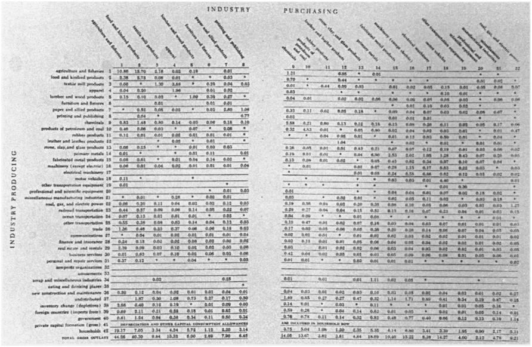
“Exchange of goods and services in the U.S. for 1947.” From Wassily W. Leontief, Input-Output Economics (1986).
political events most successfully. With its minimalist vision of economic transactions, it appears to make no metaphysical claims. No doubt many would say of philosophy’s disappearance from economics, good riddance! Was it not, after all, precisely the problem of Soviet socialism that it believed it could plan economic production from a political center that claimed to see the whole and sought to command output, fix prices, and manage distribution in ways that violated every principle not only of market forces but of democratic political life as well? Has Janos Kornai not demonstrated conclusively that the true representation of Soviet economy is not a God’s-eye view but rather the plumber’s-eye view of a stopped-up flow, one that produces shortages structurally, due to soft budget constraints (fig. 10)? Even Keynesianism - which at first had a hard time winning acceptance precisely because “planning,” even in the limited sense of government policies for economic stimulus, smacked of socialism to some and fascism to others - never tried to deduce from the economy a vision of society as a whole. “The economy,” according to Keynesians, might get “sick,” “derailed,” or need “repairs,” but it was understood as a mechanism to be tinkered with in order to effect social outcomes at the macroeconomic level, while leaving microeconomic actions free of government control.
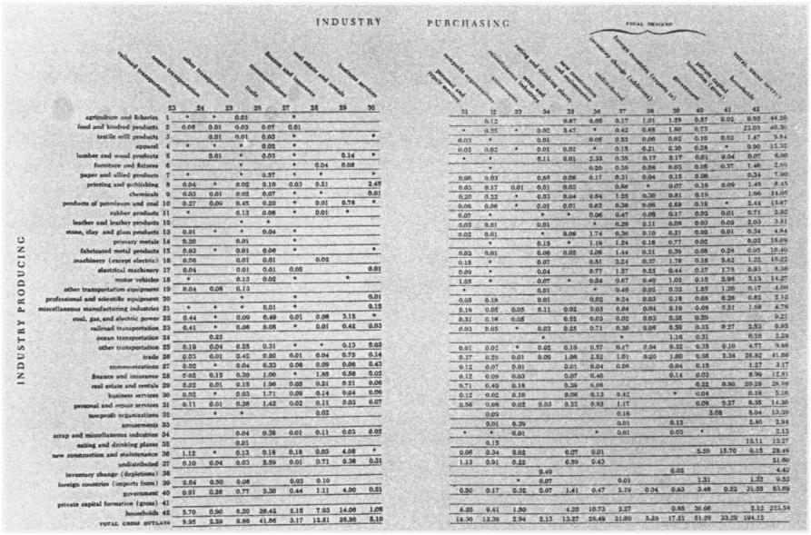
“Exchange of goods and services in the U.S. for 1947.” From Wassily W. Leontief, Input-Output Economics (1986).
Since the stagflation of the 1970s (inflation and negative growth that is unresponsive to Keynesian tinkering), game theory and rational choice have given a fashionable twist to neoclassical market theory, while neo-institutionalism has corrected its most grievous oblivion to social context. At present, its hegemonic position appears ensured. In market theory, of course, the individual reigns supreme. Even when economic actors are states or firms, their profit-maximizing reasoning occurs without any vision of the whole. Indeed, its impossibility is the source of theories of the limited, hence “bounded rationality” of economic choice. As for the vast industry of econometric modeling, many of its practitioners pride themselves in not attempting to represent empirical social existence at all. Strangely out of step with history, the work of Nobel Prize winner Wassily Leontief has resurrected a vision as grand as Quesnay’s original one (fig. 11). The matrix tables depict the entire economy, broken down into forty-two sectors, with the horizontal rows showing what each sector ships to other sectors, and the vertical rows showing what each consumes from other sectors. Again, as with Quesnay the point of these “input-output” tables is to demonstrate the seamless web of social interdependence produced by economic activity. Leontief’s tables satisfy a visionary need that the now-hegemonic neoclassical economic theory proudly refuses to fulfil. When Foucault praises the invisibility of Smith’s hand because it does not allow the sovereign sufficient knowledge to control the social field of individual desire, he forgets the other side, that the desiring individuals also lack this knowledge, and that such knowledge is vital for effective political response. Today, when the polities of nation-states are feeling deeply strained by the tug of a global economy, Foucault’s affirmation of the incapacity to envision the economy can play into the hands of a reactionary nationalism that thrives precisely on the condition of blindness to the objective determinates of contemporary social life. In Moscow in 1993 the plan for economic transformation to capitalist markets was described by officials and the press in a representationally impoverished form as, simply, “the big bang” (English original). This mystical, invisible, sonar boom, imported by economists from Harvard, was supposed to provide for three hundred million Russian people some kind of cosmic rebirth out of the ashes of seventy years of Soviet rule. Heralded as the beginning of the new era, it seemed to the average citizen, on the contrary, to lead society ever deeper into a black hole. With no new vision of social life, with no way of refiguring their identity, Russians have responded by retreating into an equally mystical but culturally familiar collective identity of ethnic unity, one that finds a frightening voice in the political rhetoric of Vladimir Zhirinovsky. A philosophical, critical vision of the social body as it is produced by the global economy provides an alternative to the politics of renewed nationalism. Such an alternative vision has the healthy advantage of corresponding to the facts because economic interdependence, not ethnic purity, is what our world is really all about. Why is it, today, that theory generally shirks the challenge of envisioning the social whole? Is it the taboo against “totalizing” discourses? If so, it might be noted that the global system will not go away simply because we theorists refuse to speak about it.76 Or is it because the social contradictions that led both Smith and Hegel to beat a hasty retreat to theology (God’s invisible hand or Geist’s cunning of reason) are bound to surface again, this time in a way that threatens the very institution of the nation, the wealth of which the discovery/invention of the economy was supposed to secure?
See Michael J. Piore and Charles F. Sabel, The Second Industrial Divide: Possibilities for Prosperity (New York, 1984 ↩
See Robert B. Reich, The Work of Nations: Preparing Ourselves for Twenty-First-Century Capitalism (New York, 1991); hereafter abbreviated WN. Reich’s arguments are controversial among economists, many of whom are critical of his work, but his high-ranking position. within the Clinton administration gives them clout. ↩
For an economic history of the institution of the U.S. firm and the transformation to “managerial capitalism,” see Alfred D. Chandler, Jr., The Visible Hand: The Managerial Revolution in American Business (Cambridge, Mass., 1977). For a political and social history of the same transformation (to “corporate capitalism”), see Martin J. Sklar, The Corporate Reconstruction of American Capitalism 1890-1916: The Market, The Law and Politics (New York, 1988). ↩
To ensure against any return to wartime controls or the seductions of statism and communism, the American business community at midcentury launched a spirited public relations campaign promoting the wonders of the profit system. General Motors produced a full-length Hollywood movie illustrating the advantages of American capitalism. Outdoor billboards erected by the Advertising Council proclaimed the benefits of free enterprise and the evils of government planning. [WN, p. 43] In 1953, the chairman of Eisenhower’s Council of Economic Advisors pronounced that the “ultimate purpose” of the American economy was “to produce more consumer goods” (quoted in WN, p. 45). ↩
See Karl Marx, Grundrisse der Kritik der politischen Ökonomie (1857-58; Berlin, 1974); trans. M. Nicolaus under the title Grundrisse: Foundations of the Critique of Political Economy (New York, 1993) ↩
See Georg Simmel, The Philosophy of Money, trans. Tom Bottomore and David Frisby, 2d ed. (London, 1978). ↩
Ivaylo Ditchev, “Epitaph for Sacrifice, Epitaph for the Left” (forthcoming):
According to the official doctrine of the Stalin-era, the present generation had to be sacrificed for the one to come…. [A Party member was] infinitely indebted … ready … at any moment to organize, to put into practice, to rouse enthusiasm, to be the avant-garde and the model for the rest[:] … modest . . ‘collectivist’ … [without] privacy and selfishness. ↩
Still, as Reich notes, it was no “mere coincidence that the Central Intelligence Agency discovered communist plots where America’s core corporations possessed, or wished to pos- sess, substantial holdings of natural resources” (WN, p. 64). ↩
Before this, the term economy meant simply domestic accounts, derived from oikos and nomos, the ancient Greek words for house and law, applied to both family and national budgets. Rousseau’s 1755 entry “Economy (Moral and Political)” in the Encyclopidie distinguishes between general, or “political” economy, and domestic, or “private” economy. See Jean-Jacques Rousseau, “Economie ou Oeconomie (Morale et Politique),” in Encyclopidie, ou dictionnaire raisonné des sciences, des arts, et des métiers, ed. Denis Diderot and Jean d’Alembert, 18 vols. (Paris, 1751-72), 5:337-49. Quesnay was also a contributor to the Encyclopidie. ↩
It might allow the claim that there is no economy except capitalism (although the latter term had to wait a century for its own discovery, when it was coined by socialists to stigmatize the prevailing economic system). I have had recent discussions with Russian intellectuals who argue that the Soviet system had no economy in the modern sense of the term. ↩
See Louis Dumont, From Mandeville to Marx: The Genesis and Triumph of Economic Ideology (Chicago, 1977): “It should be obvious that there is nothing like an economy out there, unless and until men construct such an object (p. 24). ↩
See Edward R. Tufte, The Visual Display of Quantitative Information (Cheshire, Conn., 1983). ↩
The term physiocracy means “rule of nature.” Alfred Marshall traced the origin of the term to Stoic law in the late Roman empire, and to the “sentimental admiration for the ‘natural’ life of the American Indians, which Rousseau had kindled into flame. .. . Before long they were called Physiocrats or adherents of the rule of Nature” (Alfred Marshall, Principles of Economics, 2 vols. [1890; London, 1961], 1:756 n. 2; hereafter abbreviated PE). Marshall’s own view was far less “sentimental”: “Savage” tribes have proven “incapable of keeping themselves long to steady work”; “there seems no reason to doubt that nearly all the chief pioneers of progress have been Aryans” (PE, 1:723, 724). ↩
Quoted in David McNally, Political Economy and the Rise of Capitalism: A Reinterpretation (Berkeley, 1988), p. 110; hereafter abbreviated RC. ↩
Quesnay went to Versailles as physician of the Marquise de Pompadour and was promoted in 1755 (at age sixty-one) to le premier medecin ordinaire of the king. Sir William Petty, John Locke, and Nicholas Barbon (author of A Discourse of Trade [1690]) were all trained in medicine. Petty studied anatomy in Holland and later wrote The Political Anatomy of Ireland. Locke joined the household of the Earl of Shaftesbury as a physician. ↩
More precisely, landowners were the classe distributive, the land cultivators were the classe productive, and all those engaged in nonagricultural pursuits were the classe sterile. ↩
As a result of the enclosure movement of the seventeenth century, peasant farming had to a great extent been replaced by larger farms run as capitalist enterprises. Land owners hired agricultural laborers to work their large holdings with the goal of improved production for commercial gain. “Unprocessed agricultural products as a share of English manufactured exports rose from 4.6 percent in 1700 to 11.8 percent in 1725 and to 22.2 percent by 1750.” English agriculture “provided a 100 percent return on advances” (RC, pp. 14, 146). Quesnay’s “science” was in fact a mandate for (capitalist) reform in France, where agricultural production was still largely modeled on the seignorial system and production was comparatively low. ↩
“To think of exchange as advantageous to both parties represented a basic change and signaled the advent of economics” (Dumont, From Mandeville to Marx, p. 35). ↩
The teaching of mathematics (applied to commerce) was well established in northern Italy by the quattrocento. Reckoning schools developed in cities along the trade routes. The first printed book of mathematics, the Treviso Arithmetic, taught addition, subtraction, multiplication, and division in a format that was largely unchanged in the twentieth century. A typical Treviso problem: “Two merchants wish to barter. The one has cloth at 5 lire a yard, and the other has wool at 18 lire a hundredweight. How much cloth should the first have for 464 hundredweights of wool?” (quoted in Frank I. Swetz, Capitalism and Arithmetic: The New Math of the Fifteenth Century, Including the Full Text of the Treviso Arithmetic of 1478, trans. David Eugene Smith [La Salle, Ill., 1987], p. 151). ↩
Note the metaphor of birth to describe the “fertility schema” of productive labor. ↩
Quoted in Jean-Frangois Lyotard, Libidinal Economy, trans. Iain Hamilton Grant (Bloomington, Ind., 1993), pp. 188-89. ↩
Ibid., pp. 198-99. I am distorting Lyotard’s point somewhat to make a better one. ↩
The “universal laws of natural order … appl[ied] equally to the Incas of Peru, the emperor of China, and the king of France” (RC, p. 129). ↩
Voltaire was horrified: “that a single man should be proprietor of all the land is a monstrous idea” (quoted in RC, p. 142). ↩
McNally warns against misunderstanding. Quesnay explicitly rejected “monarchial despotism” as a “fantasy” because no single man “could arbitrarily govern millions of men” (quoted in RC, p. 126). “Legal despotism” meant, rather, the rule of the law-not so much a judicial check on the monarch by the parlements as an appeal to Enlightenment principles as the “laws” that ought to guide the action of kings (RC, p. 127). ↩
Joseph A. Schumpeter, History of Economic Analysis, ed. Elizabeth Boody Schumpeter (1954; New York, 1986), p. 229; hereafter abbreviated EA. ↩
Smith’s book achieved general popularity, appealing to an international reading public. The first edition of the book sold out in six months. Between 1779 and 1791 there were four English and two Irish editions; by 1793 there were two French translations; a poor German translation appeared within a year, but a second, excellent translation by Christian Garve (used by Hegel) appeared in 1794-96. The first Russian translation was published between 1802-6, and editions in Danish, Dutch and Italian were also forthcoming. See EA, p. 193. ↩
Of course, Smith was indebted to Quesnay for the whole conception of an “economy” of growth through production and exchange. According to Dugald Stewart, who said he was told by Smith himself, the latter intended to dedicate The Wealth of Nations to Quesnay: “the Physiocrats are the only group of authors recognized by Smith as operating on the same plane of discourse” (Donald Winch, “Adam Smith’s ‘Enduring Particular Result’: A Political and Cosmopolitan Perspective,” in Wealth and Virtue: The Shaping of Political Economy in the Scottish Enlightenment, ed. Istvan Hont and Michael Ignatieff [New York, 1983], p. 268). Quesnay was influenced not only by Petty but by Locke, Shaftesbury, and Hume, so that the difference between Quesnay and Smith was due less to intellectual lineage or even to generations—Smith, born in 1723, was twenty-seven years younger-than it was to context. Agricultural capitalism was well established in England by this time, so that the self-regulation of the market appeared natural and commercial interdependence a fact of life. See the important work of Joyce Oldham Appleby, Liberalism and Republicanism in the Historical Imagination (Cambridge, Mass., 1992). ↩
Smith’s vision of the new collective body produced by the economy is so out of line with what a social body ought to be like that he reverts to quite traditional notions in his political and social theory. These incompatible visions of the collective are the source of ambiguities in his texts, discussed below. ↩
Rousseau, “Discourse on Political Economy,” Basic Political Writings, trans. and ed. Donald A. Cress (Indianapolis, 1987), p. 114. ↩
Compare Rousseau: “the body politic … is also a moral being which possesses a … general will. … The most general will is also always the most just. … The voice of the populace is, in effect, the voice of God” (ibid., pp. 114, 115). ↩
Quoted in J. G. A. Pocock, The Machiavellian Moment: Florentine Political Thought and the Atlantic Republican Tradition (Princeton, N.J., 1975), p. 123; hereafter abbreviated MM. ↩
This is a significant break from Renaissance tradition in England, which considered commercial Athens “effeminate” in comparison with Sparta’s military virtue: “society as an engine for the production and multiplication of goods was inherently hostile to society as the moral foundation of personality” (MM, p. 501). Smith sustains some of this criticism in The Theory of Moral Sentiments; economic activity is not sufficient for the creation of the good society that demands as well civic virtue and moral constraint. But in the limited realm of economics, the predominant passion of egoism can be given free reign under the form of self-interest because it produces the good of the whole. See Adam Smith, The Theory of Moral Sentiments (1759; New York, 1971); hereafter abbreviated TM. ↩
Machines do not cause the division of labor but foster this tendency that is itself a “consequence” of human nature:
this division of labour, from which so many advantages are derived, is not originally the effect of any human wisdom, which foresees and intends that general opulence to which it gives occasion. It is the necessary, though very slow and gradual, consequence of a certain propensity in human nature which has in view no such extensive utility; the propensity to truck, barter, and exchange one thing for another. [Smith, An Inquiry into the Nature and Causes of the Wealth of Nations, ed. Edwin Cannan (New York, 1994), 1:2:14; hereafter abbreviated WON] ↩
McNally’s book is an excellent corrective of the traditional view of classical economic theory as “a sustained theoretical rationalization for industrial capitalism” (RC, p. xiii); his scholarly argument is convincing, that the significance of the Physiocratic tradition in pre-Ricardian theory has been overlooked. But if Smith were indeed “strongly critical of the values and practices associated with merchants and manufacturers” (RC, p. xiv), if his political and moral theory favored the values of agrarian life, this does not change the fact that it was Smith’s theoretical description of nascent industrial society that was absolutely innovative, and that it was this element of his theory that (whether rightly or wrongly interpreted) had a deep and lasting historical effect. ↩
Machines eliminate “sauntering” by the worker from one sort of employment to another and “by making this operation the sole employment of his life, necessarily increases very much the dexterity of the workman” (WON, 1:1) ↩
Against the mercantilist fetishization of money, Smith held “that gold and silver are merely tools, no different from kitchen utensils, and that their import increases the wealth of a country just as little as the multiplication of kitchen utensils provides more food” (Simmel, The Philosophy of Money, p. 173). ↩
Again, this is a break from the Anglo-Scottish humanist tradition that viewed the division of labor as a “prime cause of corruption” (MM, p. 499). ↩
Smith writes that language has the same property of a mechanical engine in that it “becomes more simple in its rudiments and principles, just in proportion as it grows more complex in its composition” (quoted in RC, p. 179). ↩
“I have seen several boys under twenty years of age who had never exercised any other trade but that of making nails, and who, when they exerted themselves, could make, each of them, upwards of two thousand three hundred nails in a day” (WON, 1:1:8). ↩
The preventative Smith has in mind is a state-funded system of public education. Smith compares the dullness of the industrial worker with the intelligence of members of “barbarous” societies in which the division of labor has not advanced, and every man is competent as a warrior and “in some measure a statesman” (WON, 5:1:841). ↩
Of course, Smith quite rightly criticizes the logical “fallacy of composition,” that is, the belief that what holds on the composite level is merely an extension of what holds for the individual. But even if the benefits lost to the individual are recouped on the collective level, this does not yet provide philosophical legitimacy for privileging the collective over the individual. ↩
See Ludmilla Jordanova, “The Hand,” Visual Anthropology Review 8 (Fall 1992): 2-7. On natural theology, see John Hedley Brooke, Science and Religion: Some Historical Perspectives (Cambridge, 1991). ↩
His lectures at the College de France (1970-84) have not been published, but see Colin Gordon’s editorial description of, especially, the 1978 and 1979 lectures on “governmental rationality” in Colin Gordon, “Governmental Rationality: An Introduction,” in The Foucault Effect: Studies in Governmentality, ed. Graham Burchell, Gordon, and Peter Miller (Chicago, 1991), p. 15. ↩
The extent of the division of labor is limited only by “the extent of the market”— the global expansion of which was still in its infancy (WON 1:3:19). ↩
This idea is new, and it is quintessentialy modern-compare the ancient Greeks, who were persistently concerned with hubris, “the boundless desire that unbalances an individual” and thereby “poses a threat to the polis” (Nicholas Xenos, Scarcity and Modernity [London, 1989], p. 3). ↩
7Smith recognized this paradox and agreed that the goals rightly be placed before considerations of free trade. See WON 4:1-4:455-746- This section is a plea for free trade but it defends the protectionist Navigation Acts. In Germany, where commercial interdependence was in advance of political unity, the tendency of the economy to escape national boundaries was a cause of complaint rather than affirmation. Johann Gottlieb Fichte argued that the state alone unites an indeterminate mass of people into an enclosed whole. See Johann Gottlieb Fichte, Der geschlossene Handelsstat (1800). Friedrich List (1789-1818) founded a nationalist and historicist school of political economy in opposition to Smith’s cosmopolitan doctrine, which argued that a custom union of German states could provide the means to the greater goal of national union. He was particularly impressed by the United States’s economic system. See Friedrich List, Outline of American Political Economy (Philadelphia, 1827). ↩
Gordon, “Governmental Rationality,” p. 15. ↩
Tufte, The Visual Display of Quantitative Information, p. 46. ↩
Ibid., p. 47. ↩
This conception gained broad acceptance in the nineteenth century. Whereas in “archaic” societies collective consciousness was alleged to be constitutive of society, in modern “civilization” the division of labor was constitutive. See, particularly, the social theories of Herbert Spencer and Emile Durkheim, and Jiirgen Habermas’s discussion of them in Zur Kritik derfunktionalistischen Vernunft, vol. 2 of Theorie des kommunikativen Handelns (Frankfurt am Main, 1981), p. 173; trans. Thomas McCarthy, under the title Lifeworld and Systems: A Critique of Functionalist Reason, vol. 2 of The Theory of Communicative Action (Boston, 1984). ↩
Manfred Riedel, Between Tradition and Revolution: The Hegelian Transformation of Political Philosophy, trans. Walter Wright (Cambridge, 1984), p. 44; hereafter abbreviated BTR. ↩
The most exhaustive scholarship documenting this influence is Norbert Waszek, The Scottish Enlightenment and Hegel’s Account of “Civil Society” (Boston, 1988). ↩
Let me explain, relying on Riedel’s account, how this differs from previous natural law theory as it is presumed by Hobbes, Locke, or Rousseau. Natural law theory is contract theory (although it claims to be ahistorical). It holds that “societies” are essentially political associations that people (with natural rights) choose to enter contractually as citizens. It is a “union of rational, articulate individual agents” who, “by means of rational discussion,” have consented to be bound by a common will that then has the force of law (BTR, p. 44). Naturally autonomous, “free” individuals willingly submit to the law, which ensures the autonomy of all; this takes place on one topological space, a political space. For Hegel, it is the (depoliticized) system of the economy that produces the social form (see ibid., p. 148), and in modernity that form is the division of labor. Society is not a political creation, but an economic one. ↩
As he expresses it in fragment twenty-two, “the satisfaction of needs is a general interdependency of all upon one another” (Georg Wilhelm Friedrich Hegel, Das Syst spekulativen Philosophie: Fragmente aus Vorlesungsmanuskripten zur Philosophie der Natur Geistes [1803-4], vol. 1 of Jenaer Systementwiirfe, ed. Klaus Dusing and Heinz Kimmerle [Hamburg, 1986], p. 229; first published as Jenenser Realphilosophie I, ed. Johannes Hoffmeister [Hamburg, 1932]). In stark opposition to natural law theory (autonomous individuals in a state of nature), this is a historically specific anthropology of mutual interdependency “thus philosophy becomes [self-consciously] the theory of its age” (BTR, p.40). ↩
Hoffmeister’s edition of Hegel’s early Jena writings (which he called Jenense philosophie I and II) appeared in 1931-32. These texts were discussed enthusiastically by Georg Lukaics in Derjunge Hegel: Uber die Beziehungen von Dialektik und Okonomie (Berlin, 1948). They figure centrally in the commentaries of Herbert Marcuse, Reason and Revolution: Hegel and the Rise of Social Theory (London, 1941); Shlomo Avineri, Hegel’s Theory of the Modern State (London, 1972); Paul Chamley, Economie politique et philosophie chez Steuart et Hegel (Paris, 1963); and BTR. Riedel writes, “Hegel’s assimilation of the most advanced theories of political economy, as found in the classical British thinkers from James Steuart to Adam Smith and (in the Philosophy of Right of 1821) David Ricardo, had no parallel in the German idealistic philosophy of his period” (BTR, p. 108). ↩
See Hegel, Das System der spekulativen Philosophie, p. 230. Hegel does not quite get Smith’s numbers right. In fact, each time in his writings that he refers to Smith’s pin factory (1803-4, 1805-6, 1817-18, 1819-20, 1824-25), he makes a new numerical mistake, indicating that it was not the exactness of Smith’s new science that intrigued him but rather its innovative conceptualization. See Waszek, The Scottish Enlightenment, pp. 130-31. ↩
See Hegel, Naturphilosophie und Philosophie des Geistes, vol. 3 of Jenaer Systementwürfe, ed. Rolf-Peter Horstmann (1805-6; Hamburg, 1987), p. 229; hereafter abbreviated NPG; first published as Jenenser Realphilosophie II, ed. Hoffmeister (Hamburg, 1931). See also Hegel, Das System der spekulativen Philosophie, p. 228, and Waszek, The Scottish Enlightenment, p. 229. ↩
It is the interdependency of the division of labor that gives desire “the right to appear” (NPG, p. 205). Fashion, “essential and reasonable,” is the manifestation of this insatiability of needs, the limitlessness of which mirrors the division of labor (NPG, p. 223). In The Philosophy of Right Hegel extends this early analysis of civil society, describing the “system of needs” as a process of subdivision and multiplication that goes on “ad infinitum’” the process has “no qualitative limits” (Hegel, The Philosophy of Right, trans. and ed. T. M. Knox [1821; Oxford, 1967], pp. 126, 127, 128). ↩
Hegel, quoted in Waszek, The Scottish Enlightenment, pp. 152, 150. ↩
Hegel, The Philosophy of Right, p. 267. ↩
Hegel, Das System der spekulativen Philosophie, p. 230; compare NPG, pp. 223-24. ↩
Hegel, “Fragment of Historical Studies,” trans. Clark Butler, Clio 7 (Fall 1977): 128: see Waszek, The Scottish Enlightement, pp. 119-28. ↩
Hegel, Philosophie des Rechts: Die Vorlesung von 1819/20 in einer Nachschrift, ed. Dieter Henrich (Frankfurt am Main, 1983), p. 282. This is the first publication of the transcript of these lectures, a manuscript recently discovered in the Lilly Library of Indiana University.
Hegel, letter to Friedrich Immanuel Niethammer, 5 July 1816, Hegel: The Letters, trans. Clark Butler and Christiane Seiler, ed. Butler (Bloomington, Ind., 1984), p. 325. ↩
The conception of Marx’s project for Capital was contemporaneous with Minard’s graphic. Its brilliance is similar; its critical eloquence is derived from the fact that we are plunged beneath the surface of commodity exchange to the actual level of human suffering-here thousands of factory workers-that was the lived truth of really existing capitalism during the era of industrialization. Marx insisted that the human effects of the economy be made visible and palpable, and this remains his contribution to political economy no matter how often his theories-of crisis, of value, of increasing misery-may be disproved. ↩
Marshall “worshipped” Kant and claimed that Hegel’s Philosophy of History influenced the “substance” of his views (EA, p. 780 n. 19, 780), but there is no Hegelianism in his analysis, and the Kantian influence was more the neo-Kantian concern for grounding social “science” than the critical rationality of Kant’s original project. ↩
Mary Douglas and Baron Isherwood, The World of Goods (New York, 1979), p. 15. ↩
Although there were precedents as early as the 1830s, and although marginal theory fought an uphill battle before it was accepted at the end of the century (its victory largely due to its power as a counterargument to Marxist critiques of capital), the term marginal revolution refers to the nearly simultaneous but completely independent “discovery”—by William Stanley Jevons, Carl Menger, and Leon Walras (in Manchester, Vienna, and Lausanne around 1870) of the principle of diminishing marginal utility. See Mark Blaug, Economic Theory in Retrospect (Cambridge, 1985), p. 309; hereafter abbreviated E. T. Marshall synthesized their contributions in Principles of Economics. 70. ↩
One of the uncomfortable aspects of utility theory seemed to be the implication that only an egalitarian distribution of income maximizes satisfactions. Most writers after 1870 were extremely critical of the existing inequalities in income distribution and did not hesitate to use utility theory to fortify their critical outlook….
The Marshallian tradition culminated in Pigou’s Wealth and Welfare (1912), which is virtually a blueprint for the welfare state. The Fabians adopted the utility theory in Fabian Essays (1889) to display the systematic inequities of the market mechanism … It was the Austrian School that was markedly conservative and given over to attacks on socialism and the espousal of laissez-faire. [ET pp. 302-3]
F. A. Hayek, a powerful twentieth-century figure at the University of Chicago, worked in this Austrian tradition. ↩
“The dominant role of the concept of substitution at the margin in the new economics accounts for the sudden appearance of explicitly mathematical reasoning… It is not utility theory but rather marginalism as such that gave mathematics a prominent role in economics after 1870» (ET, p. 296) ↩
“An unkind critic might say that neoclassical economics indeed achieved greater generality, but only by asking easier questions” (ET p. 299) ↩
This is Thünen’s theory of “symmetrical relations” between labor and capital. See Johann Heinrich von Thünen, Der isolierte Staat in Beziehung auf Landwirtschaft und Nationalökonomie (Jena, 1921) and Von Thünen’s Isolated State, trans. Carla M. Wartenberg, ed. Peter Hall (Oxford, 1966). ↩
Marshall’s “theory of the firm” equated economic growth with the expansion of the firm, an organizational model of fertility that dates to the turn of the century (see fig. 2). Note that in Marshall’s fantasy the firm was organic, with growth followed ultimately by inevitable decline and “senility.” ↩
Quoted in F. A. Hayek, The Fatal Conceit: The Errors of Socialism, vol. 1 of The Collected Works of F. A. Hayek, ed. W. W. Bartley III (Chicago, 1988), p. 95. ↩
Fredric Jameson, the obvious exception, still presumes that economics provides a base for cultural phenomena rather than being itself a cultural product. Bill Brown has proposed that we “see” the material evidence of the system via the media (rather than Playfair’s graphics). This suggests interpreting global images as ciphers for the system, which is today cultural as well as (more importantly than?) economic. ↩